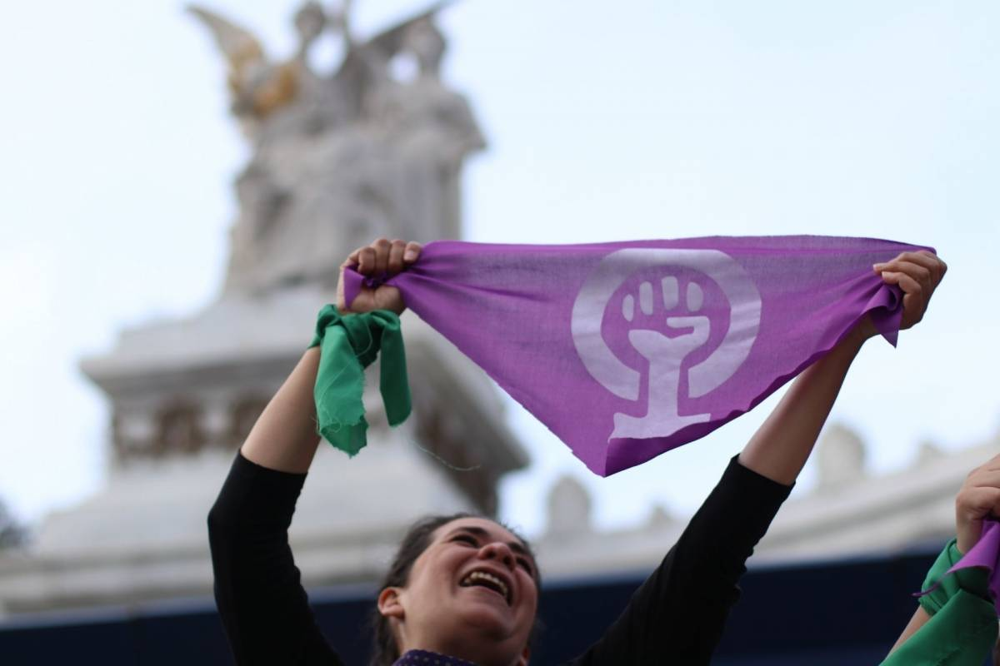

March 8th


The protest on March 8th was inspired by the #Metoo movement and because of recent femicides that had happened in the country. The word femicide can be understood as a violent killing towards women simply because they are another gender (Gob.mx). This happens ten times daily in Mexico, ten women are killed each day because they are women (NY Times). Since January until June of 2020, there were 489 femicides in the country which indicates a 9.2% increase from the registered femicides from those same months in 2019 (Forbes Mx). However, there were two specific femicides that sparked this protest which were the killing of Ingrid Escamilla and of Fátima Cecilia Aldrighett. Ingrid was 25 years old and she was skinned, while Fátima was only 7 years old and her corpse was found in a plastic bag (NY Times). Mexican women cannot take it anymore so they decided to protest to tell the government that it has to ameliorate the conditions of half of the population. In all, the protest took place to fight against the violence towards women and also to fight for equal opportunities.